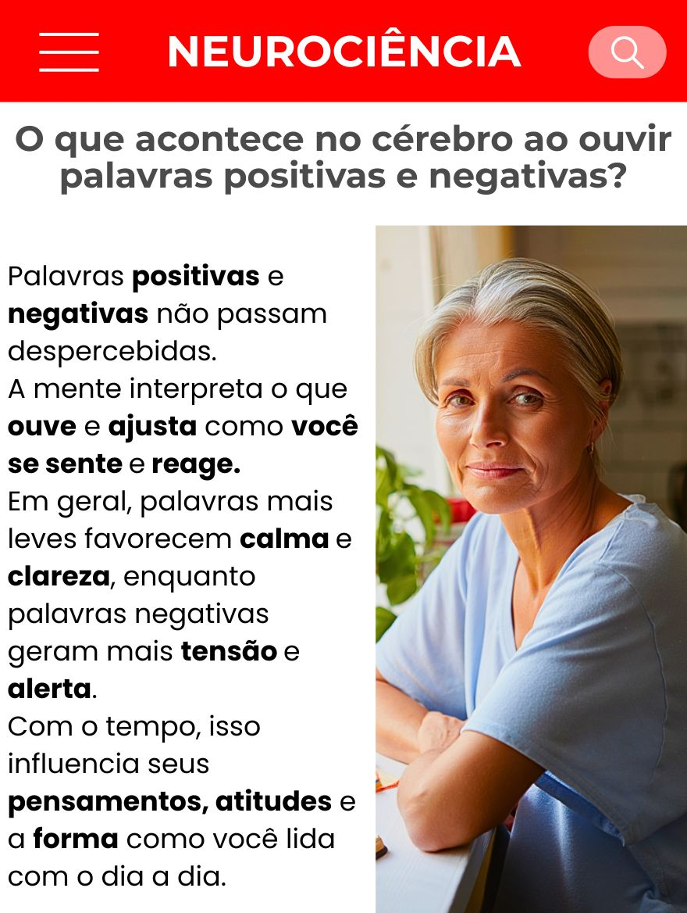

É um prazer ter você aqui.
Antes de continuar te enviando as mensagens, eu precisei organizar melhor a forma como estou cuidando disso…
Porque muitas pessoas começaram a entrar em contato, e eu não quero fazer algo de qualquer jeito.
Esse passo rápido aqui é só pra entender como te ajudar da forma certa, com cuidado e responsabilidade.
Nos últimos dias, o que mais tem pesado no seu coração?
Essas mensagens de conforto… você sente que sua mente precisa delas:
Hoje, você consegue separar um momento tranquilo para ouvir algo que acalme sua mente?

Sabendo do bem que isso te faz, se houvesse um lugar organizado só para receber essas mensagens e áudios toda semana... você honraria isso?
Eu precisei tomar uma decisão importante.
A mensagem de fé e paz é gratuita e sempre será. O dom de Deus não se vende.
Porém, para manter um grupo exclusivo no WhatsApp ativo e constante para centenas de pessoas, precisei contratar uma ferramenta de tecnologia.
A mensalidade dessa estrutura de envios é alta e sairia toda do meu bolso.
Algumas pessoas me disseram que ajudariam com 60 ou até 100 por mês para garantir que esse trabalho continuasse vivo.
Mas eu não quis pesar para ninguém. Apenas defini que essa pequena colaboração seja dividida coletivamente a cada mês.
Se precisasse de uma ajuda simbólica de apenas 15 por mês para manter esse trabalho vivo e você ter seu espaço lá dentro toda semana... você colaboraria com gratidão?
Eu entendo completamente. Às vezes parece apenas mais um custo no meio de tantos que temos hoje.
Mas o que estamos falando aqui não é sobre gastar 15.
Muitas vezes investimos valores maiores em coisas passageiras, mas hesitamos quando se trata de algo constante para o bem da nossa própria mente e da nossa família.
Faz sentido para você que manter essa estrutura viva é um bem maior e que os 15 são apenas uma doação para a ferramenta funcionar?
Tudo bem!
A sua paz não tem preço, e o nosso carinho por você continua exatamente o mesmo.
Agradeço de coração pelo seu tempo até aqui. A plataforma será estruturada apenas com as colaborações de quem pôde ajudar neste momento.
Você sempre será muito bem-vindo aqui!
Analisando suas respostas...
Muito bem!
Vejo que seu coração valoriza a constância e a paz, e que você compreende a necessidade dessa estrutura.
Grupo Exclusivo Preparado
Sua colaboração de 15 é suficiente para liberar o seu acesso e te colocar diretamente no nosso grupo organizado no WhatsApp.
Colaboração mensal. Acesso e mensagens constantes.